یکی از ویژگی های حایز اهمیت نرم افزار سایان در طبقه بندی و کدینگ حساب ها پشتیبانی از حسابداری چند لایه ای می باشد با ایجاد لایه های حساب و تخصیص معین های مناسب به لایه ها شما می توانید گردش های حساب پروژه ها یا شعب را به تفکیک حساب ثبت و نگه داری کنید، همچنین با استفاده از این لایه های حساب شما می توانید سود و زیان پروژه ها و شعب را نیز به تفکیک حساب محاسبه و ثبت نمایید با انتخاب منوی مدیریت لایه های حساب صفحه ی زیر باز می شود:
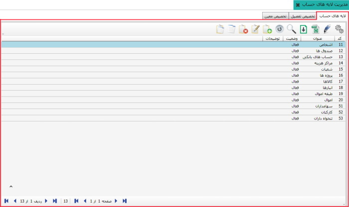این صفحه دارای سه تب «لایه های حساب»، «تخصیص تفصیل به لایه ها» و «تخصیص معین به لایه ها» می باشد که با انتخاب هر یک صفحه مربوط به آن ظاهر می شود. در شکل بالا تب «لایه های حساب» انتخاب شده است و لیست لایه های حسابی که به صورت پیش فرض در سیستم وجود دارند مشاهده می شوند شما می توانید در صورت نیاز علاوه بر این لایه ها، لایه های جدیدی نیز ایجاد کنید. برای این کار روی گزینه اضافه کلیک کنید تا فرم مربوطه باز شود سپس آن را تکمیل کرده و روی کلید تایید کلیک کنید.
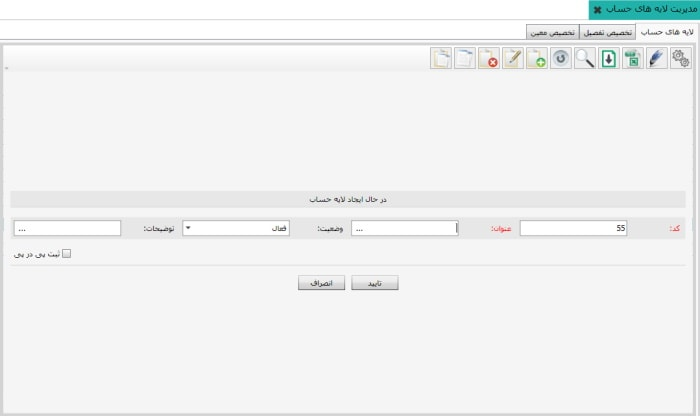با کلیک روی این تب تصویر زیر نمایان خواهد شد:
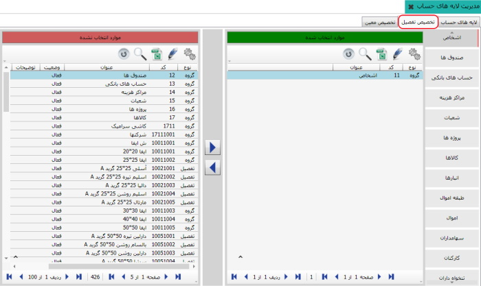برای دسترسی تفصیل به لایه مورد نظر، لایه مورد نظر را از لیست لایه ها در سمت راست صفحه انتخاب کنید، حال می توانید با استفاده از کلید تفصیل های مورد نیاز را با انتقال از لیست سمت چپ به لیست سمت راست به لایه مربوطه تخصیص دهید. با انتخاب لایه های مختلف مشاهده خواهید کرد که به طور پیش فرض تفصیل هایی به لایه ها اختصاص داده شده اند. با استفاده از کلید می توان تفصیل های اختصاص داده شده را به لیست سمت چپ انتقال داد تا از تخصیص خارج شوند.
با کلیک روی این تب صفحه مربوط به آن به نمایش در می آید، از این قسمت معین های دلخواه را می توان به یک لایه مورد نظر اختصاص داد.
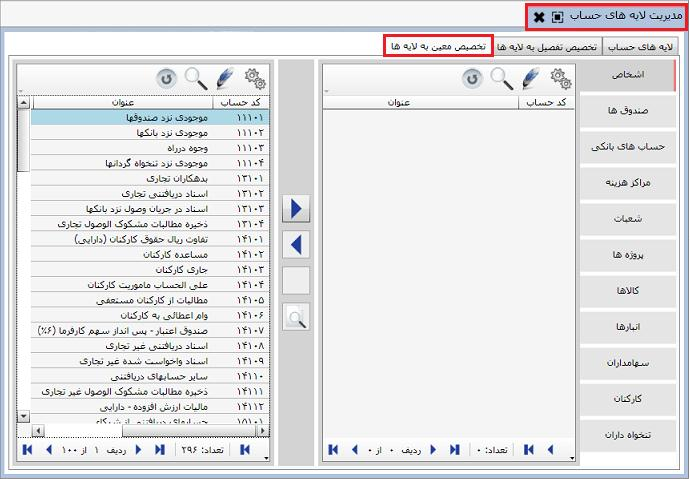صفحه ی بالا نیز مانند صفحه ی مربوط به تخصیص تفصیل به لایه ها می باشد که به همان طریق می توانید به لایه های موجود معین های مناسب آن ها را اختصاص دهید. با این کار در هنگام صدور سند حسابداری می توانید حساب های معین را به تفصیل ها ارتباط دهید، در واقع لایه ها ارتباط بین معین ها و تفصیل ها را ایجاد می کنند و مانند پلی بین این دو حساب عمل می کنند. به دلیل تعدد بسیار معین ها و طولانی بودن مراحل تشخیص و ایجاد ارتباط بین معین ها و لایه ها، ارتباط پیش فرض کاملی بین معین ها و لایه ها در سیستم حسابداری قرار داده شده که شما می توانید آن را به صورت آماده برای نرم افزار باز خوانی نمایید. برای این کار به منوی «صفحه ی تنظیمات حسابداری» که آخرین منو در لیست سیستم مالی و حسابداری است مراجعه کنید.
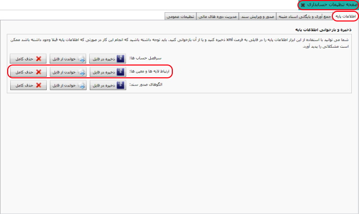پس از باز شدن صفحه تنظیمات حسابداری، از تب «اطلاعات پایه»، از کادر مشخص شده با عنوان ارتباط لایه ها و معین ها، گزینه خواندن از فایل را انتخاب نمایید. در این صورت پنجره زیر به نمایش در می آید:
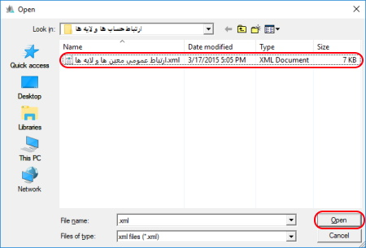از این صفحه «ارتباط عمومی معین ها و لایه ها» را انتخاب کرده و روی گزینه Open کلیک کنید تا پیغام زیر ظاهر شود. با کلیک روی گزینه «بله» این ارتباط در سیستم اعمال می شود.
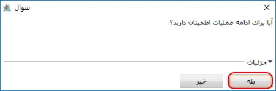پس از بازخوانی ارتباط عمومی بین لایه ها و معین ها صفحه «تخصیص معین به لایه ها» به شکل زیر در می آید:
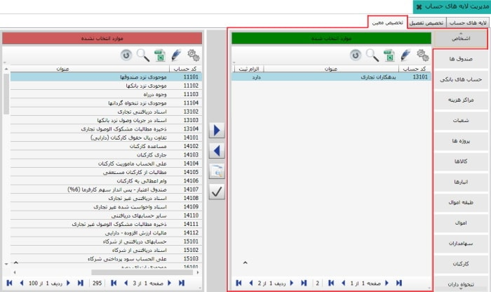همان طور که در شکل بالا مشاهده می کنید ارتباط بازخوانی شده اعمال شده است و به لایه اشخاص، معین های جدول سمت راست اختصاص داده شده اند. با انتخاب لایه های دیگر می توانید معین های اختصاص داده شده به آن ها را نیز مشاهده کنید.
البته می توانید از شکل بالا در صورت نیاز معین یا معین های دیگری را نیز به لایه اشخاص اختصاص دهید که برای این کار معین مورد نظر را از جدول سمت چپ انتخاب کرده و روی کلیک کنید و یا می توانید ارتباط معین یا معین هایی را با لایه مورد نظر قطع کنید برای این کار از جدول سمت راست معین مورد نظر را انتخاب کرده و روی کلیک کنید. در صورتی که پس از بازخوانی ارتباط معین با لایه ها تغییراتی را در آن اعمال کردید، مثلا ارتباط جدیدی بین معین ها و لایه ها ایجاد کرده یا ارتباط معین هایی را با برخی لایه ها حذف کرده باشید، می توانید کل ارتباطات تغییر یافته را به صورت فایل xml در سیستم خود ذخیره کنید. برای این کار در «صفحه تنظیمات حسابداری» از تب «اطلاعات پایه» با استفاده از گزینه 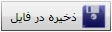 ارتباطات ایجادی خود را ذخیره نمایید.
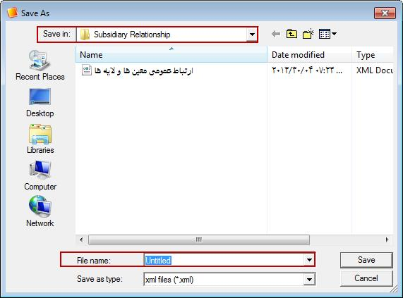 نام فایل را در قسمت File name وارد کرده و روی گزینه Save کلیک کنید، می توانید از قسمت Save in در بالای صفحه آدرس مکانی را که فایل در آن ذخیره می شود را نیز تغییر دهید.
گزینه ی الزام ثبت در تصویر زیر مشخص شده است اکنون به شرح این گزینه می پردازیم:
الزام ثبت: در صورتی که این گزینه فعال باشد هنگام ثبت یک سند حسابداری شما ملزم به پر کردن فیلد تفصیل لایه ی مورد نظر هستید در غیر این صورت شما می توانید بدون پر کردن تفصیل لایه ی مورد نظر سند حسابداری خود را صادر کنید اما توصیه می شود برای همه ی لایه های حساب گزینه ی الزام ثبت فعال باشد.
مشاهده اسناد مرتبط : با انتخاب معین دلخواه (مثال: معین اسناد دریافتنی تجاری) که به لایه ای (مثال: لایه اشخاص) ارتباط داده شده است و کلیک روی گزینه «مشاهده اسناد مرتبط» می توانید همه اسنادی که معین مورد نظر در آنها وجود دارد را مشاهده کنید:
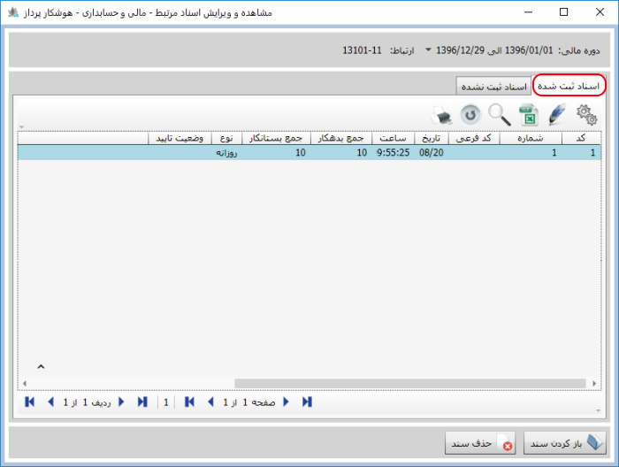
صفحه شکل بالا دارای دو تب «اسناد ثبت شده» و «اسناد ثبت نشده» است، در تب
«اسناد ثبت شده» اسنادی را مشاهده می کنید که معین انتخابی
(مثال: معین اسناد دریافتنی تجاری) در آنها طبق ارتباط
ایجاد شده ثبت شده است. کاربرد این قسمت این است که
اگر بخواهید ارتباطی را حذف کنید چون قبلا اسنادی
را طبق آن ارتباط ثبت کرده اید سیستم اجازه حذف
ارتباط را به شما نمی دهد. لذا شما باید ابتدا از
این قسمت اسناد ثبت شده طبق ارتباط را با کلیک روی
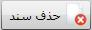
حذف و سپس ارتباط مورد نظر را
حذف کنید. همچنین می توانید این اسناد را باز کرده
و آنها را مشاهده کنید و در صورت نیاز ویرایش کنید.
تب
« اسناد ثبت نشده»:
حالتی پیش می آید که شما مجبور می شوید در طول دوره
مالیتان ارتباطی را بین معین و لایه خاصی ایجاد کنید.
در این صورت چون قبل از ایجاد ارتباط، اسنادی را
ثبت کرده اید که معین انتخابی در آنها وجود داشته
لذا نمی توانید ارتباط ایجادی را در حالت الزام
ثبت قرار دهید. هنگام ایجاد ارتباط سوال زیر
ظاهر می شود، با انتخاب دکمه «بله» سیستم
ارتباط را بدون الزام ثبت ایجاد می کند.
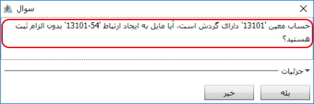
همان طور که در شکل زیر مشاهده می کنید، در صورتی که حساب معینی (مثلا بدهکاران تجاری) دارای گردش باشد، ایجاد ارتباط آن با لایه مورد نظر بدون الزام ثبت ایجاد می شود.
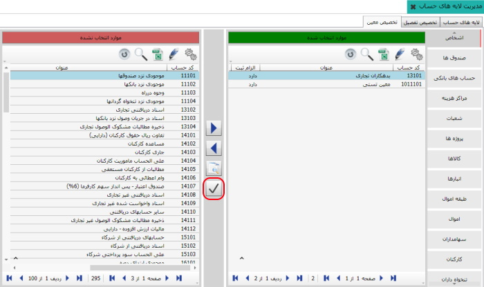در این حالت برای این که ارتباط مورد نظر را در حالت الزام ثبت قرار دهید باید به تب «اسناد ثبت نشده» بروید که در آن اسنادی قرار دارند که بر اساس ارتباط ایجاد شده ثبت نشده اند، آن ها را با کلیک روی 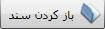 بر اساس ارتباط ایجاد شده ویرایش نمایید سپس دوباره از تب تخصیص معین به لایه ها، معینی که بدون الزام ثبت تخصیص داده شده بود را انتخاب نمایید و آن را در حالت الزام ثبت قرار دهید.